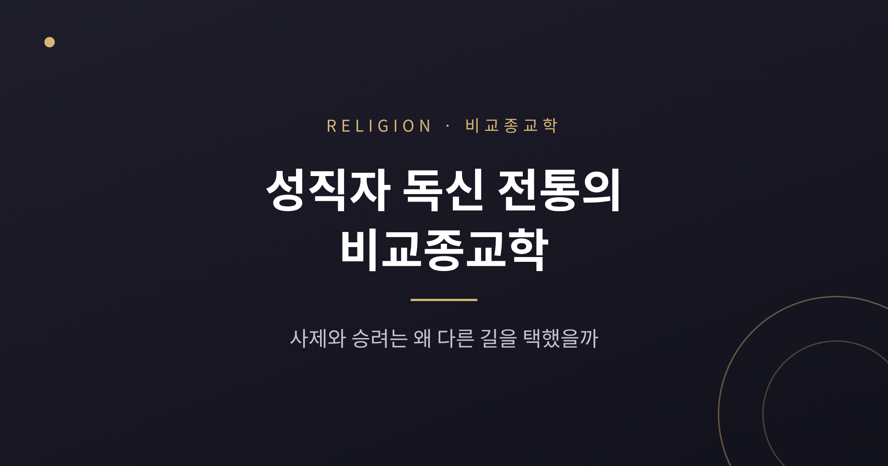
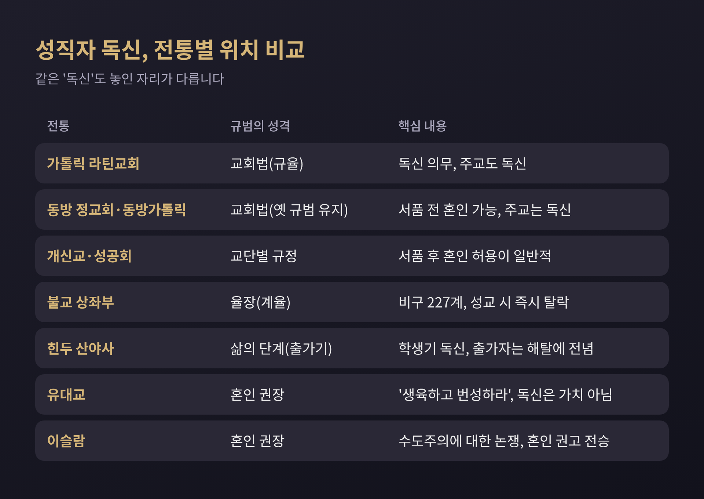
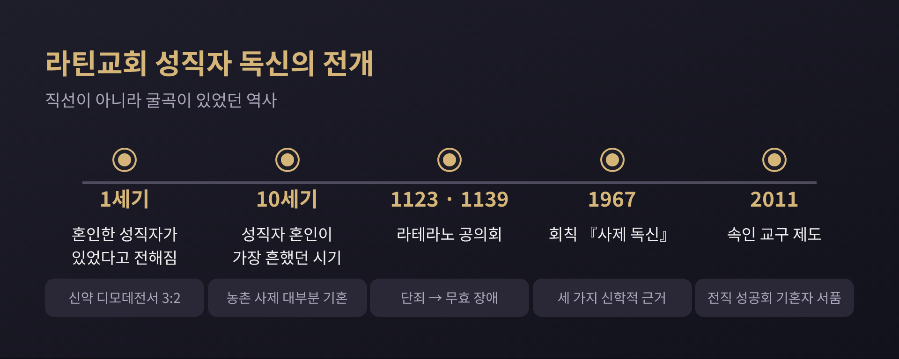
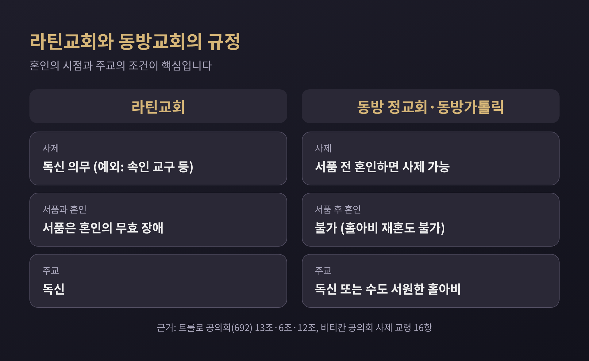
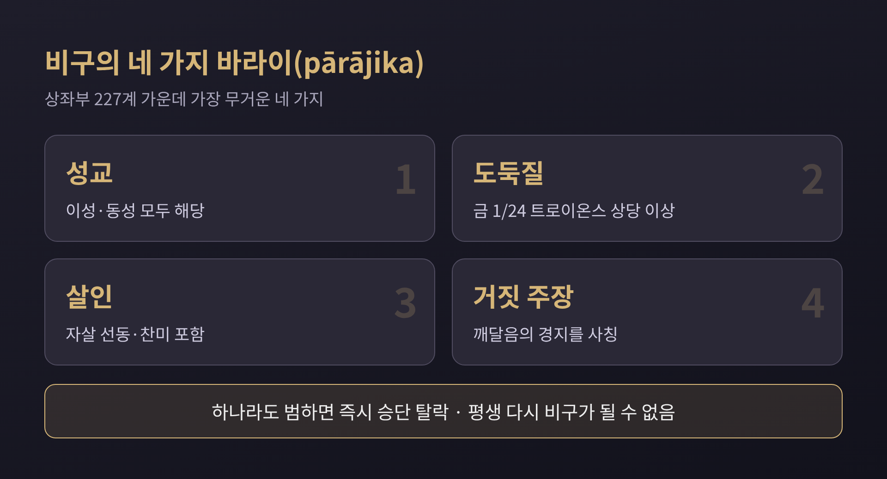
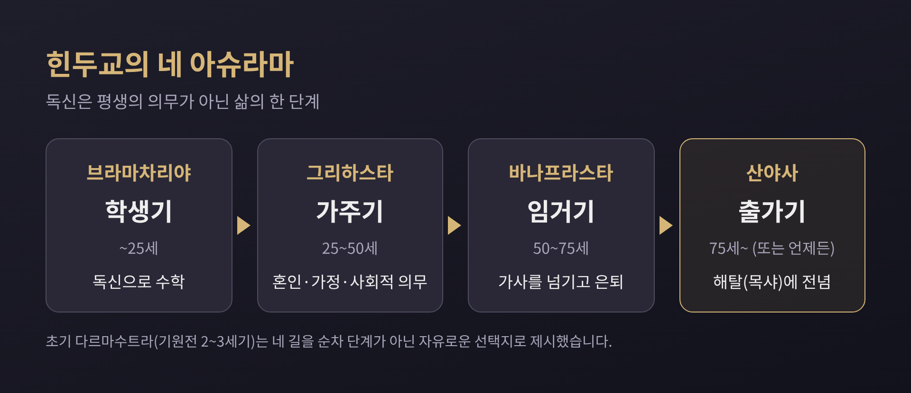

오늘은 성직자의 독신을 비교종교학의 눈으로 살펴보려 합니다. 가톨릭 사제, 불교 승가, 힌두 산야사가 각각 어떤 규범과 역사를 가졌는지 정리하고, 개신교·유대교·이슬람의 다른 입장도 함께 놓아 보겠습니다. 어느 전통이 옳은지를 가리는 글은 아닙니다. 같은 질문에 서로 다른 답이 나온 이유를 차분히 따라가 보는 글입니다.
핵심부터 말씀드리면 이렇습니다. 성직자 독신은 모든 종교에 공통된 규칙이 아니라, 전통마다 '법', '계율', '삶의 단계', '불필요한 것'이라는 서로 다른 자리에 놓여 있습니다.
독신이라는 말은 하나지만 그 뜻은 전통마다 다릅니다. 가톨릭에서는 교회가 정한 규율이고, 불교에서는 승려가 되는 조건에 가까우며, 힌두교에서는 인생 전체 가운데 한 시기의 선택입니다. 유대교와 이슬람에서는 오히려 혼인이 권장됩니다.
그래서 "성직자는 왜 결혼하지 않는가"라는 질문은 "어느 전통의 성직자인가"부터 물어야 답할 수 있습니다. 아래 표는 이 글에서 다룰 다섯 갈래의 큰 차이를 먼저 보여 줍니다.

초기 교회에는 혼인한 성직자가 있었습니다. 신약의 디모데전서 3장 2절은 감독이 "한 아내의 남편"이어야 한다고 적고 있고, 베드로의 장모 이야기는 사도 가운데 기혼자가 있었다는 근거로 자주 인용됩니다. 다만 이 구절을 어떻게 읽을지는 학자마다 갈립니다.
시간이 흐르며 독신은 규범이 되어 갑니다. 흥미로운 점은 그 과정이 직선이 아니었다는 것입니다. 10세기는 라틴교회에서 성직자 혼인이 가장 흔했던 시기로 서술되고, 당시 농촌 사제 대부분이 기혼이었다고 합니다. 7세기부터 10세기 말까지 독신법은 서방의 상당 지역에서 거의 지켜지지 않았다는 평가도 있습니다.
전환점은 11세기 그레고리오 개혁 이후입니다. 제1차 라테라노 공의회(1123)가 성직자의 혼인과 축첩을 단죄했고, 제2차 라테라노 공의회(1139, 교황 인노첸시오 2세 소집, 약 1,000명 참석)가 이를 되풀이했습니다. 이때 성품(서품)이 혼인의 무효 장애로 자리 잡았습니다. 금지를 넘어, 서품받은 사람의 혼인은 처음부터 성립하지 않는 것으로 본다는 뜻입니다. 무효가 어느 공의회에서 확립됐는지는 자료마다 설명이 조금 다릅니다.

가톨릭의 공식 설명은 신학적 의미를 앞세웁니다. 제2차 바티칸 공의회는 사제 교령 16항에서 독신이 "사제직의 본성상 요구되는 것은 아니다"라고 밝히면서도, 사목적 사랑의 표지이며 "나뉘지 않은 마음"으로 그리스도께 일치하는 길이고 오는 세상의 표징이라고 설명합니다. 1967년 6월 24일 바오로 6세의 회칙 『사제 독신』은 이유를 그리스도론, 교회론, 종말론의 세 갈래로 정리했습니다.
반면 개혁을 요구하는 쪽은 독신을 선택 사항으로 두자고 주장하며, 역사 속 재정과 재산 문제를 함께 거론합니다. 신앙의 진위가 아니라 규율의 존속 여부를 두고 벌어지는 논쟁이라는 점을 기억해 두시면 좋겠습니다.
한 가지 수치를 덧붙입니다. 교황청 연감에 따르면 2023년 말 전 세계 가톨릭 신자는 약 14억 600만 명, 사제는 406,996명이었고, 사제 수는 전년보다 734명(0.2%) 줄었습니다. 이 감소의 원인을 독신 규율로 돌릴 수 있는지는 이 통계만으로 판단할 수 없습니다.
가톨릭이라고 해서 모든 사제가 독신인 것은 아닙니다. 동방 정교회와 동방가톨릭교회는 혼인한 사제를 인정합니다. 692년 콘스탄티노폴리스에서 열린 트룰로 공의회의 13조는 로마가 부제와 사제에게 아내와 동거하지 않겠다고 약속하게 하는 점을 언급하며, 옛 규범에 따라 성직자의 합법적 혼인을 계속 유지한다고 선언했습니다.
다만 조건이 있습니다. 혼인은 서품 전에 해야 합니다. 서품 뒤에 혼인하는 것은 허용되지 않고, 홀아비가 된 사제의 재혼도 막혀 있습니다. 주교는 독신이어야 하며, 보통 수도자 중에서 뽑습니다. 요약하면 동방에는 "혼인한 사제와 독신 주교"라는 이중 구조가 있습니다.
규율이 공동체의 소속감과 얽힌 사례도 있습니다. 1595년 베레스테야 합동 때 교황 클레멘스 8세는 우크라이나 그리스가톨릭의 기혼 사제직을 허용했습니다. 그런데 1929년 미국에서 기혼 사제 금지가 다시 엄격히 적용되자 피츠버그 교구 신자 약 10만 명이 정교회로 옮겨 갔다고 기록됩니다.

16세기 종교개혁은 성직자 혼인 문제를 정면으로 꺼냈습니다. 루터는 1522년 『혼인 생활에 관하여』에서 독신이 부자연스럽고 성서에 맞지 않는다고 주장했습니다. 1523년에는 스트라스부르의 목사 마태오 첼이 카타리나 슈츠와 혼인했고, 카타리나는 이듬해 『성직자 혼인 변호』를 써서 비난에 맞섰습니다. 루터 자신의 혼인은 1525년입니다.
가톨릭 측은 고린도전서 7장 7~9절 등을 들어 독신의 가치를 옹호했고, 혼인한 성직자 부부는 오랫동안 공격에 시달렸습니다. 영국에서는 헨리 8세의 6개조 조항(1539)이 성직자 혼인을 금지했다가, 에드워드 6세 때 성직자혼인법(1548)으로 성공회 사제의 혼인이 허용됐습니다.
오늘날 대부분의 개신교는 서품 뒤 혼인을 허용합니다. 다만 일부 교단은 디모데전서 3장을 근거로 홀아비 목사의 재혼이나 이혼 경력자의 목회를 제한하기도 합니다. 개신교에서 독신이 금지된 것은 아닙니다. 혼인이 목회의 필수 조건이 아닌 열린 선택이 되었다는 쪽에 가깝습니다.
불교에서 독신은 신의 명령이 아니라 수행 공동체의 계율입니다. 상좌부 비구는 227개 계율을 지키고, 그 가운데 가장 무거운 네 가지가 바라이(pārājika, '패배')입니다. 성교, 도둑질, 살인, 깨달음에 대한 거짓 주장이 여기에 속합니다. 이 중 하나라도 범하면 즉시 승단을 떠나게 되며 평생 다시 비구가 될 수 없습니다.
첫 번째 바라이가 성교입니다. 이성과 동성을 가리지 않고 적용됩니다. 비구니는 311개 계율을 지킵니다.
눈여겨볼 대목은 계율이 자발적이라는 설명입니다. 지키기 어렵다면 승단을 떠나는 편이, 알면서 어기고 머무는 것보다 낫다고 봅니다. 재가 신자의 제3계(삿된 음행을 삼감)도 명령이 아니라 수련의 서약으로 받아들여집니다.

일본은 다른 길을 걸었습니다. 1868년 신불분리령 5년 뒤 메이지 정부가 승려의 육식과 공식 혼인을 허용하는 포고를 냈고, 대다수 승려가 세속의 생활방식을 택했습니다. 일부는 이를 거부했습니다. 율장 체계가 일본에 깊이 자리 잡지 않았기에 승가 내부의 큰 논쟁은 없었다는 해석이 있습니다. 반면 상좌부에는 혼인한 승려가 없습니다. 예전엔 같은 불교로 묶어 말했지만, 지금은 지역과 종파에 따라 승려의 모습이 크게 다르다는 점을 보여 줍니다.
힌두교는 독신을 평생의 의무가 아니라 삶의 단계로 풀어 냅니다. 전통 모델인 네 아슈라마는 브라마차리야(학생기, 25세까지), 그리하스타(가주기, 25~50세, 혼인과 가정), 바나프라스타(임거기, 50~75세), 산야사(출가기)로 이어집니다. 학생기에는 독신이 명시되고, 가주기에는 혼인과 가정을 꾸리는 것이 핵심 과제입니다.
산야사는 '버림'이라는 뜻입니다. 브리태니커는 산야시가 자신의 장례를 치르는 의식으로 사회적·가문적 지위를 내려놓는다고 설명합니다. 산야시는 화장하지 않고 앉은 명상 자세로 묻는 것이 일반적입니다. 이 단계는 삶의 네 가지 목표 가운데 해탈(목샤)에 전적으로 바쳐집니다.
주의할 점이 있습니다. 4단계가 반드시 순서대로 이어진 것은 아닙니다. 기원전 2~3세기의 초기 다르마수트라는 네 길을 자유롭게 고르는 평생의 대안으로 제시했고, 나중에야 순차적 단계로 정리됐습니다. 5세기 이후 문헌이 출가를 네 번째 단계와 연결했지만 이 연결이 원래부터의 것은 아니며, 실제 사두들이 이 이상을 얼마나 따랐는지도 확실하지 않다고 합니다.

대표적 출가 교단으로 8세기 샹카라가 세웠다고 전해지는 다샤나미가 있습니다. 최고 단계인 파라마한사('위대한 백조')는 보통 최소 12년의 수습을 거치고 자기에 대한 앎을 이룬 사람에게만 주어집니다.
유대교는 독신을 가치로 보지 않는 전통으로 소개됩니다. 창세기 1장 28절의 "생육하고 번성하라"가 생명을 낳으라는 계명으로 읽히고, 탈무드에서는 남편이 부부관계를 피하는 것이 아내의 이혼 청구 사유가 됩니다. 슐칸 아루크는 20세가 넘은 미혼 남성에게 법정이 혼인을 강제할 수 있다고 하면서, 학업 중인 이는 예외로 둡니다. 탈무드 시대 랍비 중 알려진 독신자는 벤 아자이가 거의 유일한데, 그는 남에게는 혼인을 권하면서도 "영혼이 토라를 사랑한다"며 스스로는 혼인하지 않았습니다.
이슬람에서 수도주의를 가리키는 말 '라흐바니야'는 꾸란 57장 27절에 한 번 나옵니다. 예수를 따르던 이들이 만들어 낸 것이며 하느님이 명하신 것은 아니라는 취지입니다. 이 구절의 해석은 다양합니다. "이슬람에 수도주의는 없다"는 전승이 전해지지만, 금욕적 경건을 어디까지 허용할지는 무슬림 사이에서도 논쟁적이라고 합니다. 시아파 저술에서는 "혼인한 사람은 종교의 절반을 지킨 것"이라는 전승과 꾸란 24장 32절이 혼인 권고의 근거로 인용됩니다. 종파마다 강조점이 다를 수 있다는 점은 감안하셔야 합니다.
다섯 전통을 나란히 놓으면 세 가지가 보입니다.
첫째, 독신은 대체로 '무엇을 위해 비우는가'에 대한 답입니다. 가톨릭은 나뉘지 않은 마음과 봉사, 불교는 번뇌의 단절, 힌두교는 해탈을 앞세웁니다. 둘째, 규범의 층위가 다릅니다. 교회법, 율장, 삶의 단계라는 서로 다른 장치가 독신을 떠받칩니다. 셋째, 한 전통 안에서도 시대와 지역에 따라 달랐습니다. 10세기 라틴교회, 일본 불교, 동방교회가 그 증거입니다.
한계도 있습니다. 이 글은 교양 수준의 비교이며, 각 전통의 신학적 진리 주장을 평가하지 않습니다. 힌두교 여성 출가자나 수피 전통처럼 이번 조사에서 확인하지 못한 주제는 다루지 않았습니다.
정리하면 이렇습니다. 독신을 둘러싼 전통들의 차이는 인간이 '성스러운 삶'과 '일상의 삶'의 관계를 얼마나 다르게 설계해 왔는지를 보여 주는 지도입니다. 어느 길이 맞는지를 말하기보다, 각 길이 무엇을 지키려 했는지를 읽어 보시길 권합니다.